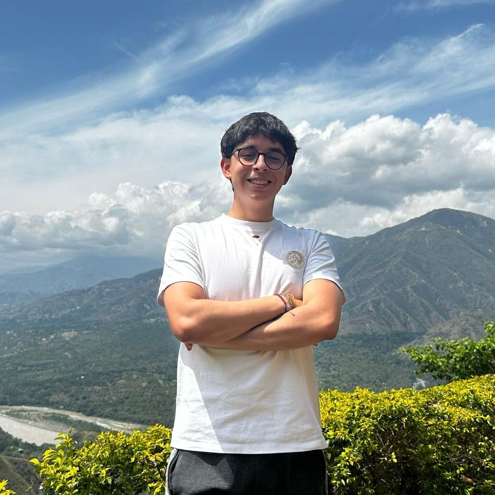

Sobre el Autor

Juan David Acosta Rodríguez
Actualmente, soy estudiante de Ingeniería Catastral y Geodesia en la Universidad Distrital, cursando el tercer semestre. Me apasiona la programación y las TICs, y formo parte activa del semillero de investigación AstroIngeniería, donde exploramos e investigamos sobre astronomía y geociencias.
Mi Alma Máter: Universidad Distrital
Facultad de Ingeniería, sede La Macarena.